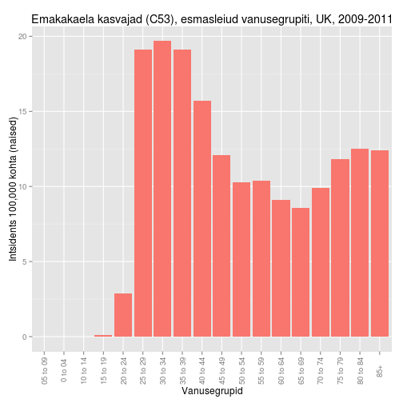

Rakulised onkogeenid
Onkobioloogia
Taavi Päll
vanemteadur, VTAK
Recap
Lihtsad retroviirused transformeerivad kana ja hiire rakke


Mehhanism: insertsiooniline mutagenees

Inimese tuumorviirused
Insertsioonilist mehhanismi pole
Kliiniliselt olulistest vähkidest on viirustega seotud
- emakakaela kasvajad, ~100% nakatunud papilloomiviirusega HPV 16/18 ja
- kuues kõige sagedasem kasvaja naistel (16. mõlema soo kokkuvõttes)
- kuues kõige sagedasem kasvaja naistel (16. mõlema soo kokkuvõttes)
- maksakartsinoomid, B ja C hepatiit HCV ja HBV - 80% maksakasvajatest
- emakakaela kasvajad, ~100% nakatunud papilloomiviirusega HPV 16/18 ja
Haruldasematest
- Burkitt'i lümfoom, Epstein-Barri viirus EBV - 2.5% lümfoomidest
Emakakaela kasvajad

Bosch FX, Lorincz A, Muñoz N, et al. The causal relation between human papillomavirus and cervical cancer. J Clin Path 2002; 55(4):244-265.
Expression levels of genes typically altered in cervical carcinomas with HPV integration

Maksakasvajate intsidents langeb kokku HCV või HBV nakkusega
- Maades kus B ja C heptiit on laialt levinud, on ka HCC intsidents õrge.
- This finding is consistent with the fact that about three-quarters of HCCs are attributed to chronic HBV and HCV infections.

Malaaria võimaldab EBV-l 'kapist välja' tulla
Malaaria haigestumus kattub mitte-Hodkinsi lümfoomi haigestumusega
Malaaria Aafrikas

NHL Aafrikas

Kuidas seletada vähi teket inimesel
Hüpotees: endogeensed proviirused
- Lähtudes retroviiruste elutsüklist, integreeruvad genoomi endogeensete retroviirustena,
- satuvad idutee rakkudesse ja muutuvad pärilikuks,
- enamasti vaikeolekus, ei transkribeeri oma geene,
- juhuslik ning harv aktiveerumine.
Endogeensed proviirused hiirtel
- BrdU aktiveerib Akr liini hiirtel endogeensed retroviirused (MLV)
- DNA metülatsioon eemaldatakse lookusest ja vaigistamine kaob
- Akr liini hiirtel on kaks lookust kuhu on integreerunud replikatsiooni-kompetentne MLV
- MLV produktsioon viib leukeemia tekkele.

Inimese ERV-d... FUBAR
- 8% inimese genoomist pärineb retroviirustest, kuid
- inimese kasvajatest pole leitud retroviiruseid ega jälgigi nendest (pöörd-transkriptaas),
- inimese LTR-i sisaldavad järjestused on pärit vähemalt >5M aasta tagusest ajast,
- tugevasti muteerunud,
- mittefunktsionaalsed,
- läbinud geenitriivi ja fikseerunud (populatsioonis on kõigil identne lookus).
- HERV-K alamperekonnas on lookuseid millel on kõik ORF-id intaktsed, kuid viirust neilt ei toodeta ja neid pole ka vähkides leitud
Mis tekitab vähki? Kartsinonogeenid!
Kartsinogeenid toimivad mutageenidena ja nende toime-mehhanismiks on raku kasvukontrolli geenide muteerimine onkogeenideks.
\[\color{green}{normaalne\; kasvu kontrolli\; geen} \quad \underrightarrow{\times\; \color{red}{mutageen}} \quad \color{yellow}{onkogeen} \]

Keemilised kartsinonogeenid

Katsusaburō Yamagiwa
- 1915. aastal demonstreeris pigi kartsinogeense toime
- pintseldas küüliku kõrvu igapäevaselt pigiga,
- mitu kuud hiljem moodustus lamerakuline kartsinoom.
Näitas, et kasvajaid on võimalik esile kutsuda
Paradigma: kartsinogeenid toimivad mutageenidena
Füüsilise või keemilise katserogeeni poolt transformeerunud rakud kannavad muteerunud geene - onkogeene - , mis rikuvad normaalse kasvukontrolli.
DNA transfektsioon võimaldas isoleerida mitte-viraalsed onkogeenid
- Hiire C3HT1/2 rakke transformeeriti 3-Methylcholanthrene (3-ME, MCA) abil,
- transformeerunud rakkudest isoleeriti genoomne DNA,
- eraldatud DNA transformeeriti mitte-tumorigeensetesse NIH3T3 rakkudesse,
- isoleeriti kolooniad mis olid transformeerunud ja tumorigeensed.
- Sama loogika toimib ka inimese vähirakkudest eraldatud DNA korral.

1 onkogeen = 1 transformeerunud rakk/koloonia
- Transformeerunud rakkude genoomse DNA fragmentide transfekteerimisel läheb rakku sisse 0.1% doonor DNA-d.
- Tõenäosus, et kaks lingitud geeni satuvad ühte rakku on \[10^{-3} \times 10^{-3} = 10^{-6} \]
Kokkuvõte: onkogeenid tekivad ka viirustest sõltumatult.
Retroviiruste poolt aktiveeritud onkogeenid on samad mis mitte-viraalsete kartsinogeenide aktiveeritud
- Harvey roti sarkoomiviiruse H-ras proov hübridiseerub inimese kusepõie kartsinoomi DNA-ga transfekteeritud NIH3T3 rakkude genoomsele DNA-le (Parada et al., 1982: paremal).
Southern bloti põhimõte


Inimese kasvajatest leitud retroviraalsed onkogeenid, näited
| Viirus | Liik | Onkogeen | Onkovalk | Inimese kasvaja |
|---|---|---|---|---|
| Rousi sarkoom | kana | src | mitte-retseptor TK | käärsoole vähk |
| Abelsoni leukeemia | hiir | abl | mitte-retseptor TK | CML |
| Lindude erütroblastoos | hiir | erbB | retseptor TK | mao-, kopsu- ja rinnavähk |
| McDonough' kassi sarkoom | kass | fms | retseptor TK | AML |
| Hardy-Zuckerman kassi viirus | kass | kit | retseptor TK | GI strooma vähk |
| Hiire sarkoom 3611 | hiir | raf | Ser/Thr kinaas | kusepõie kartsinoom |
| Simian sarcoma | ahv | sis | kasvufaktor (PDGF) | erinevad vähid |
| Harvey' sarkoom | hiir/rott | H-ras | väike G-valk | kusepõie kartsinoom |
| Kirsten'i sarkoom | hiir/rott | K-ras | väike G-valk | erinevad vähid |
| Lindude erütroblastoos E26 | kana | ets | transkriptsioonifaktor | leukeemia |
| Lindude müelotsütoom | kana | myc | transkriptsioonifaktor | erinevad vähid |
| Retikuloendotelioos | kalkun | rel | transkriptsioonifaktor | lümfoom |
MYC
- Üks esimesi onkogeene mis avastati peale src-i, lindude müelotsütoomi viirus MC29-st
- Heterodimeerne transkriptsioonifaktor, peab dimeriseeruma teise bHLH TF-ga:
- ainult MYC:MAX heterodimeer seob DNA-le ja aktiveerib transkriptsiooni
- MAX seob MYC-perekonna valke: MYC, MYCN, MYCL
- MYC TF seostub E-box järjestusele CACGTG
- MYC vähid: Burkitti lümfoom, neuroblastoom
- Onkogeenseteks mutatsioonideks on transkriptsiooni üles-regulatsioon ja amplifikatsioon
ERBB
- Kireldati algselt lindude erütroblastoosi tüvest R aastal 1935
- R-tüvi sisaldas kahte rakulist onkogeeni erbA a erbB
- erbA osutus hiljem mitte obligatoorseks hormoonretseptoriks
- erbB oli transformatsiooniks vajalik ja piisav
- R-tüvi sisaldas kahte rakulist onkogeeni erbA a erbB
- Membranne türosiin-kinaas, homoloogne EGF retseptoriga
- Võrreldes EGFR-iga oli ErbB-l ekstratsellulaarne osa deleteerunud
- selline deletsioonimutant ei seo ligandi (EGF), kuid on konstitutiivselt aktiivne
- inimesel glioblastoomides tavaline analoogne mutant EGFRvIII, kus on deleteerunud eksonid 2-7
- rinnakasvajates HER2/ERBB2/Neu lookuse amplifikatsioon 80% sagedusega HER2-enriched subtüübis
<<<<<<< HEAD
ad40a0838ae41f915d5ffa62c4912bcc99920f2b
HER2 lookuse amplifikatsioon rinnakasvajates


SRC
- Huvitaval kombel SRC-i inimese kasvajatest eriti ei leitud
- esineb ~12% kaugele arenenud käärsoole kartsinoomides colorectal carcinoma
- Src-perekonna kinaasid Src family kinases (SFK) on (Src, Fyn, Yes, Lck, Lyn, Hck, Fgr and Blk)
- Paradoksaalselt SRC näiteks rakkude jagunemist ei mõjuta, toimib adhesioonides ja on seotud vähi invaseerumisega.

Inimese proto-onkogeenide aktivatsioonimehhanismid
Viirustes
- Retroviirusega seotud onkogeenide puhul läheb geen raku kontrolli alt viiruse kontrolli alla
- myc ekspressioon on füsioloogilistes tingimustes kasvufaktorite kontrolli all
- AMV (Avian Myeoloblastosis Virus) genoomis hakatakse aga myc järjestust konstitutiivselt ekspresseerima.
Mutatsioonid
Lisaks amplifikatsioonile ja üle-ekspressioonile on ka mutatsioonid
- H-ras mis isoleeriti inimese kusepõie kartsinoomist ei olnud amplifitseerunud,
- sekveneerimine näitas somaatilist G->T punktmutatsiooni, mis oli täiesti piisav et H-ras onkogeeniks muuta
- Vähides esinev mutatsioon koodonites 12 või 61 (G12V) muudab Ras-i konstitutiivselt aktiivseks, rikkudes GAP (GTP-ase activating protein) valgu seostumise
Ras-i mutatsioonid
Ras geenid on vähkides ühed sagedamini muteerunud geenidest (TCGA andmetel läbilõikes 10%)
| Vähipaige/tüüp | % muteerunud RAS geeniga (homoloog) |
|---|---|
| kõhunääre | 90 (K) |
| kilpnääre (papillaarne) | 60 (H,K,N) |
| kilpnääre (follikulaarne) | 55 (H,K,N) |
| käärsool | 45 (K) |
| seminoom | 45 (K,N) |
| müelodüsplaasia | 40 (N,K) |
| kops (mitte-väikserakuline) | 35 (K) |
| AML | 30 (N) |
| maks | 30 (N) |
| melanoom | 15 (K) |
| kusepõis | 10 (K) |
| neer | 10 (H) |
Onkogeenide aktivatsioonimehhanismid
- Regulatoorsed (amplifikats, deletsioon)
- Struktuursed (mutatsioonid)
- Regulatoorsed \(\times\) Struktuursed

MYC-i aktivatsiooniks kolm mehhanismi
Kolm mehhanismi, kõik regulatoorsed:
- proviiruse integratsioon (linnud)
- geeni amplifikatsioon (inimene)
- kromosomaalsed translokatsioonid
N-MYC amplifikatsioon pärilikes neuroblastoomides
Kahte tüüpi amplifikatsioone
- HSR, homogeenselt värvuvad piirkonnad
- DM, double minutes: kromosoomi välised partiklid
- amplifikatsioonid on bimodaalsed 10-30 koopiat ja 100-150 koopiat
- lisaks neuroblastoomidele ka teistes neuroektodermaal kasvajates, astrotsütoomid, glioomid, ka väikse-rakulises kopsukasvajas.
HSR ja double minutes (nooled)

Sagedamini amplifitseerunud genoomipiirkonnad

Olulised korduvad fokaalsed koopiaarvu muutused (SCNA)
Top 10:
| Geen | Funktsioon |
|---|---|
| CCND1 | G1 tsükliin |
| EGFR | TK retseptor |
| MYC | transkripts. faktor |
| ERBB2 | TK retseptor |
| CCNE1 | G1 tsükliin |
| MCL1 | anti-apoptootiline valk |
| MDM2 | p53 E3 ubikvitiini ligaas |
MYC translokatsioon
MYC aktivatsioon translokatsioonilise mehhanismi teel
- Burkitti lümfoomides
- c-myc geene translokeeritakse immunoglobuliini lookusesse kõigis BL.
- Immunoglobulin raske ahel IgH 80%, \(\kappa\) või \(\lambda\) kerge ahel, kumbagi 10%.
| Translokatsioon | Fuusion | Sagedus |
|---|---|---|
| t(8;14)(q24;q32) | IGH/MYC | 80% |
| t(2;8)(p12;q24) | IGK/MYC | 10% |
| t(8;22)(q24;q11) | IGL/MYC | 10 % |

Kokkuvõte
- Onkogeen on geen mis võib potentsiaalselt vähki tekitada ja vähkides on nad muteerunud või ekspresseeritud ebanormaalselt kõrgel tasemel.
- Proto-onkogeen on normaalne geen mis võib muutuda onkogeeniks.
Refs
- Natalie Teich, Douglas R. Lowy, Janet W. Hartley, Wallace P. Rowe, Studies of the mechanism of induction of infectious murine leukemia virus from AKR mouse embryo cell lines by 5-iododeoxyuridine and 5-bromodeoxyuridine, Virology, Volume 51, Issue 1, January 1973, Pages 163-173, ISSN 0042-6822, http://dx.doi.org/10.1016/0042-6822(73)90376-0.